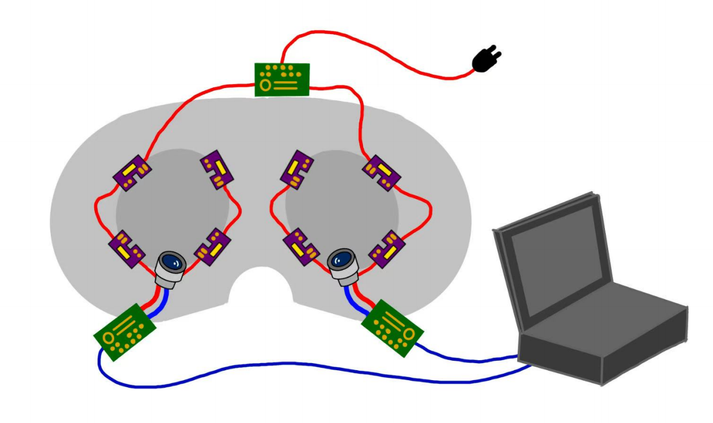
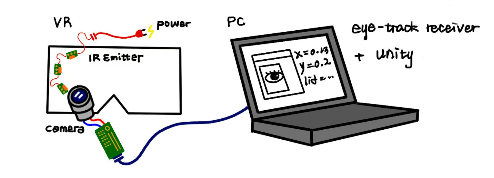
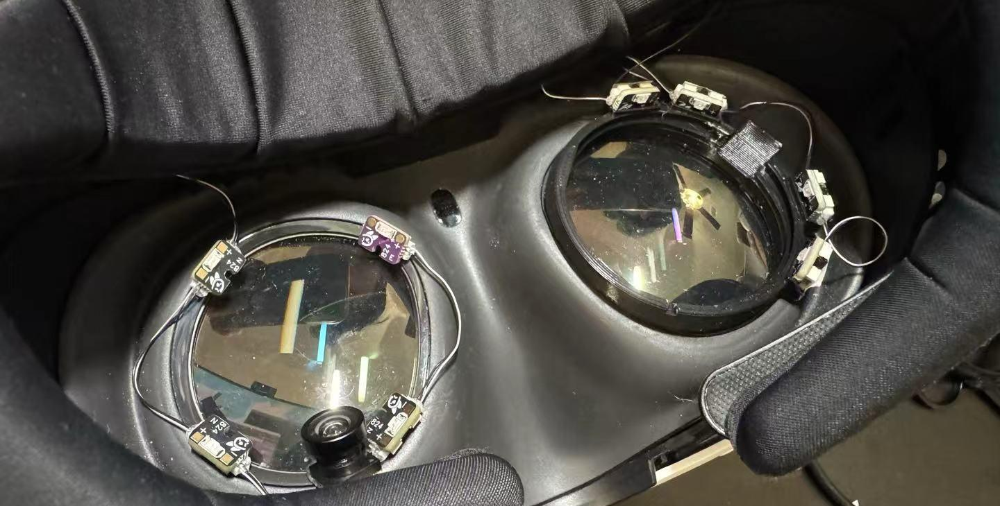
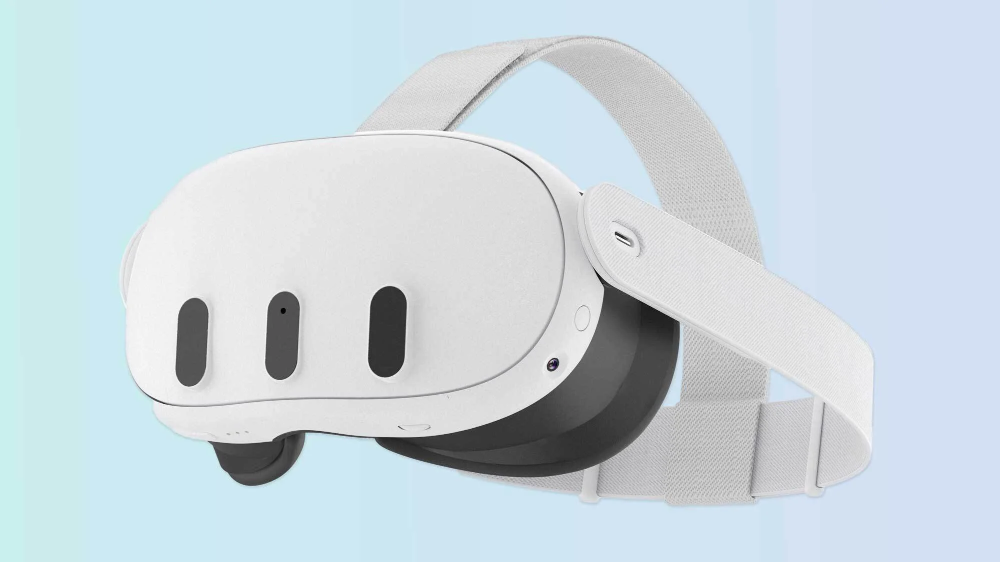
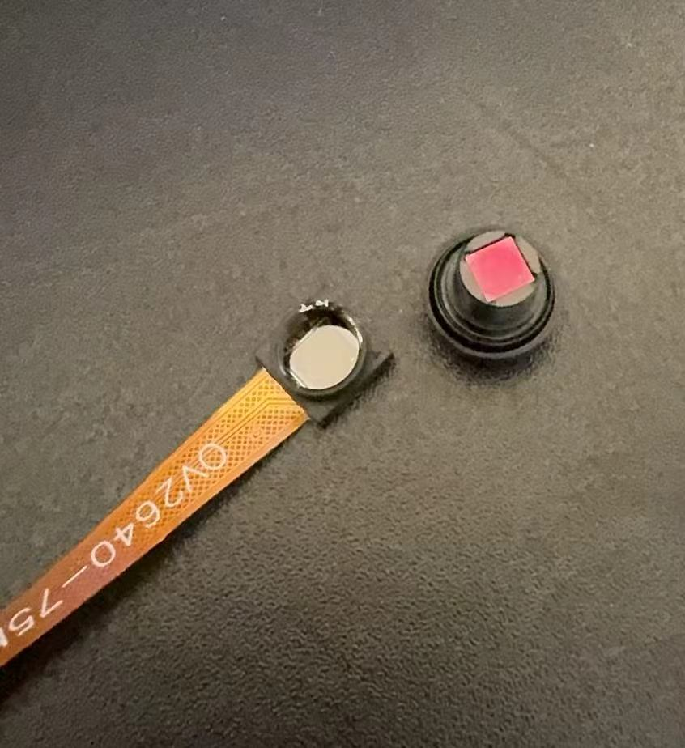
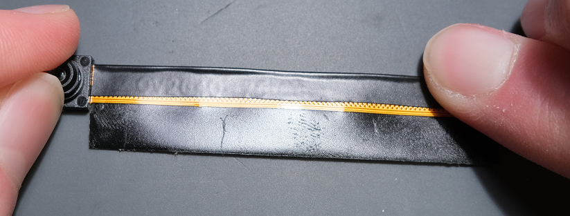
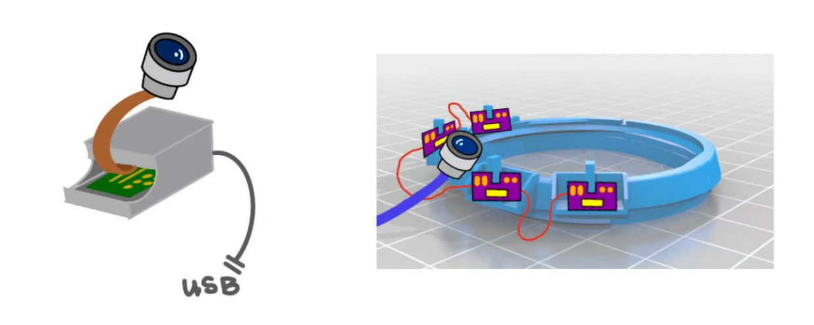
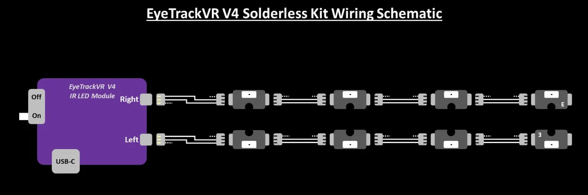
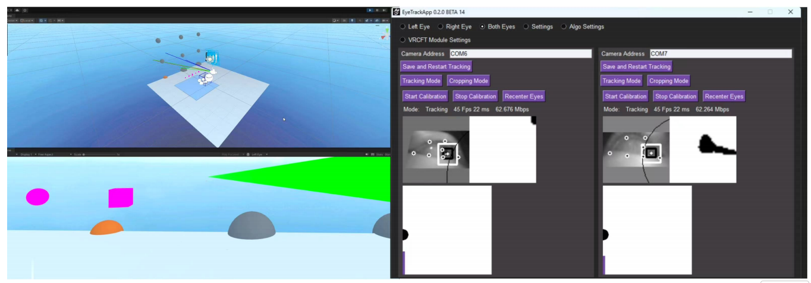

EyeTrackVR / Unity
面向科研的低成本 VR 眼动追踪扩展方案

图 1：在一台不支持眼动追踪的 VR 头显上进行的硬件改装。
项目概述
本项目提出了一套低成本眼动追踪方案（硬件 + 软件），可将标准的、不支持眼动追踪的 VR 头显（例如 Meta Quest 3）以商业方案一小部分的成本，升级为具备眼动追踪能力的科研设备。该系统平均追踪精度可达视角 4.8°，刷新率为 60 Hz，适用于注意力研究、交互技术开发以及注视数据分析等特定科研场景。

图 2：硬件搭建与整体数据流程的简化示意图。
研究动机
眼动追踪是 VR 研究中的关键组成部分，能够帮助分析用户的注意力模式、交互行为，并支持注视点渲染（Foveated Rendering）。然而，商业眼动追踪方案存在明显的准入门槛：
- 成本高昂：内置眼动追踪功能的专业级 VR 头显（如 Varjo XR-3、HTC Vive Pro Eye）售价通常在 1,500 至 6,500 美元之间，远超许多科研经费和教育机构的预算。
- 可及性有限：许多眼动追踪方案依赖专有软件生态或特定硬件环境，限制了研究设计的灵活性。
- 数据所有权问题：商业平台可能限制原始数据的访问，或采用“黑箱”处理算法，影响研究的透明度。
- 教育门槛：学生与初级研究者往往难以获得昂贵设备，缺乏动手实践眼动追踪技术的机会。
本项目旨在证明，一套低成本的眼动追踪方案（总搭建成本约 200-300 美元）可以作为教学环境与探索性研究的实用替代方案，同时让学生在计算机视觉与硬件集成方面获得宝贵的动手经验。
成果概览

图 8：VR 眼动追踪硬件系统的最终成品（占位图）。
- 采样率：约 60 Hz（有线配置比无线配置具有更高的稳定性）
- 精度：视角 4.8°（标准差 = 1.8°）
- 延迟：约 20-50 毫秒（因配置而异）
- 数据输出：实时注视向量、眼睛开合度、瞳孔直径
- 数据格式：OSC（Open Sound Control）协议，便于集成
- 总成本：硬件约 280 美元（不含 VR 头显）
注：以上参数于 2025 年 4 月在有线配置下测得。
实际可分辨能力
4.8° 的精度对应以下不同场景下的实际分辨能力：
- 虚拟桌面（50cm）：约 4.2cm 分辨精度——适用于较大的界面元素，如应用图标或菜单区域
- 手臂距离（1m）：约 8.4cm 分辨精度——适合判断近场环境中较大物体的注视焦点
- 远距离显示（5m）：约 42cm 分辨精度——适合判断大型虚拟屏幕上哪一区域获得了关注
核心组件
{kind=link}

截图 - 点击查看大图
一台不支持眼动追踪的 VR 头显（例如 Meta Quest 3，约 499 美元）
{kind=link}

截图 - 点击查看大图
至少 2 个红外感光迷你摄像头（建议购买 4 个，因去除红外滤光片存在损坏风险；每个约 10-15 美元）
{kind=link}
2 块微控制器开发板，用于图像处理与数据传输（可选 ESP32-CAM、Xiao ESP32S3 Sense 等；每块约 15-25 美元）
{kind=link}
基于 850nm 波长红外 LED 的红外照明系统（推荐使用 EyeTrackVR 官方 LED 套件，型号 XL-3216HIRC-850；约 20 美元）
其他所需部件
- 3 根 USB-C to USB-C 数据线（2 根用于摄像头，1 根用于 LED 供电；总计约 10-15 美元）
- 3D 打印固定支架，用于固定摄像头、红外发射器与微控制器（若外包打印约 5-10 美元，自行打印则仅需材料成本）
- 优质双面胶带（推荐 VHB 或同类产品以确保牢固固定；约 5-8 美元）
- 1 卷电工胶带，用于保护摄像头排线（约 3-5 美元）
- 可选：便携式 USB 充电宝，用于延长无线使用时间（约 20-30 美元）
预估总成本：200-300 美元（不含 VR 头显）
提示：大部分组件可在 Amazon 上快速购得。但 AliExpress（速卖通） 价格明显更低（具体链接请参见 EyeTrackVR 文档）。 请注意 AliExpress 的发货通常需要 2-4 周，若选择这一更经济的方案，请提前规划时间。
安装注意事项
在参照 EyeTrackVR 官方文档进行安装时，请特别留意以下要点：
1. 摄像头排线易损
⚠️ 注意：尽量减少摄像头的插拔次数。完成初步测试后，强烈建议立即按照“保护摄像头排线”章节的说明对排线进行防护处理。 这些排线连接非常脆弱，反复受力容易导致故障。

图 3：使用电工胶带加固，保护摄像头排线。
2. 摄像头位置优化
我的最终版本将摄像头放置在与眼平面成约 45° 夹角的位置，这样可以：
- 减少极端视角下的摄像头盲区，确保无论注视方向如何，瞳孔始终清晰可见
- 最大程度减少面部特征（脸颊、鼻子）造成的遮挡
但需要注意的是，最佳摄像头角度可能因个人面部结构和头显佩戴方式而异。建议多次尝试不同角度，以找到最适合自身情况的配置。

图 3：摄像头相对于眼平面呈 45° 角放置。
3. 走线策略
在正式安装前，请仔细规划走线方式。3D 打印的摄像头支架通常会使排线出口方向与 USB-C 接口方向一致。在本方案中，摄像头排线被刻意布置在与 USB-C 数据线相反的方向，以减少头显周围的线材拥挤。
若采用这种走线方式，请务必在排线两侧都做好电工胶带防护，并避免排线出现锐角弯折。平缓的弧度对维持长期可靠性至关重要。

图 4：摄像头固定与走线示例。
4. LED 电路方向
在组装 EyeTrackVR 官方 LED 阵列时（V4 模块设计，每只眼睛 4 颗 LED），请注意左右眼的电路方向是相反的。这一设计确保整个视野范围内都能获得恰当的红外照明。

图 5：左右眼 LED 电路方向。
⚠️ 注意：本原型采用胶带与粘合剂等临时固定方式将各组件安装到头显上。选择这种简易搭建方式是为了便于快速迭代与测试，但这也可能影响系统整体的精度与稳定性。 未来版本应探索更为永久稳固的固定方案。
固件安装
微控制器开发板需要刷入相应固件才能正常工作。本方案采用有线配置，以获得更高的刷新率、更低的延迟与更好的稳定性。
安装步骤：
- 下载固件：从官方 GitHub 仓库获取 OpenIris 固件
- 安装开发环境：使用 Arduino IDE 或 PlatformIO
- 配置固件：根据你的硬件设置以下参数：
- 摄像头型号（OV2640、OV5640 等）
- 开发板型号（ESP32-CAM 或 Xiao ESP32S3 Sense）
- 连接方式（有线 / 无线）
- LED 配置与亮度
- 若使用无线连接，还需配置网络设置
- 使用 Arduino IDE 或 PlatformIO 将固件烧录到每一块微控制器开发板
- 验证连接：通过分配给每块开发板的 IP 地址访问其网页界面，检查以下内容：
- 红外 LED 是否点亮（可用手机摄像头观察）
- 网页界面中是否出现摄像头画面
- 转动眼睛时瞳孔检测是否正常工作
算法选择：本方案使用 Adaptive Starburst Hybrid Sample Feature（ASHSFRAC）算法进行瞳孔检测与注视估计，在测试环境中表现最为有效。
故障排查提示：若遇到连接问题，请确保电脑与微控制器开发板处于同一 WiFi 网络下。部分机构网络因客户端隔离策略可能导致通信失败，如有需要可考虑使用独立的 WiFi 路由器搭建眼动追踪系统。
Unity 集成
本项目开发了一套自定义 Unity 程序，用于处理校准、验证、实时可视化与数据采集。
Unity 程序功能：
- OSC 通信：接收来自 EyeTrackVR 固件的实时眼动追踪数据
- 九点校准系统：支持头部运动补偿
- 验证工具：精度评估与重新校准检测
- 注视可视化：实时呈现注视位置的视觉反馈
- 数据记录：带时间戳的完整数据记录
- 热力图生成：用于注意力分析的后期处理工具

图 6：Unity 校准界面，展示九点校准网格（占位图）。
校准流程：
校准算法在以下三者之间建立映射关系：
- 来自追踪器的原始眼动位置（EyeTrackVR 计算机视觉输出的归一化坐标）
- 校准点的已知位置
- VR 空间中头部的位置与朝向
验证与精度评估：
校准完成后，系统会在用户在验证点之间切换注视时测量视角变化，并将其与实际角度差进行比较，从而确定追踪精度的“误差范围”。
重新校准要求：测试表明，通常在使用约 10 分钟后需要重新校准，尤其是在头部大幅移动、头显调整或用户姿态变化之后。
数据采集与导出：
系统会记录完整的数据用于后期分析，包括时间戳、注视位置（2D 屏幕坐标与 3D 世界坐标）、头部位置/旋转以及眼睛开合度。数据以 CSV 格式导出，便于后续分析。
性能对比
虽然这套自制方案无法与高端商业系统的参数相比，但它以极低的成本，为许多科研应用提供了足够的性能：
| 系统 | 采样率 | 精度 | 成本 |
|---|---|---|---|
| EyeTrackVR（本项目） | 约 60 Hz | 视角 4.8°（标准差 = 1.8°） | 约 200-300 美元 |
| Varjo XR-3 | 200 Hz | <0.5° 视角 | 约 6,500 美元 |
| HTC Vive Pro Eye | 120 Hz | 约 0.5-1.0° 视角 | 约 1,500 美元 |
| Meta Quest Pro | 90 Hz | 约 1° 视角 | 约 1,000 美元 |
挑战与局限性
在开发过程中，我们识别出以下几类挑战与局限：
硬件方面的挑战：
- 在不同用户、不同面部结构下维持稳定一致的红外照明
- 在不对 VR 头显造成永久性改动的前提下，实现舒适牢固的固定
- 线材管理：有线方案会显著限制用户的活动范围，这一点在研究设计中需要特别考虑
- 极端角度注视时摄像头存在遮挡问题（通过 45° 摄像头布局已有所缓解）
- 使用胶带/粘合剂进行的临时固定，很可能是精度受限的重要原因之一
软件方面的挑战：
- 频繁的重新校准：通常每使用约 10 分钟，或头部大幅移动/头显调整后即需重新校准
- 偶发软件卡顿（每小时 3-4 次，每次 1-3 秒），可能由较高的 USB 数据负载引起
- 长时间使用过程中偶尔需要重启系统
适用性评估：
这些维护需求表明，当前方案更适合探索性研究与早期演示，而非大规模被试实验或用于发表的严谨数据采集。该系统作为教学工具与概念验证平台表现出色。
未来改进方向
我们也识别出若干值得未来探索的改进方向：
硬件改进：
- 固定方式：原型依赖临时粘合剂固定，很可能是导致 4.8° 精度限制的主要原因。若采用更稳固持久的固定方案（如定制支架，或与特定 VR 头显型号深度集成），精度有望提升至 2-3° 视角。
- 多摄像头方案：探索更多摄像头角度组合，以减少极端视角下的盲区
- 模块化红外照明：开发能更好适应不同用户与面部结构的照明系统
- 更优的线材管理：设计更精简美观的走线方案
软件改进：
- 探索能在保持 60Hz 刷新率的同时提升精度的其他计算机视觉算法
- 实现连续校准机制，减少手动重新校准的需求
- 优化数据吞吐量，避免偶发卡顿
- 开发更完善的故障诊断工具
结论
本项目证明了低成本、开源的眼动追踪方案完全可以成功应用于 VR 研究场景。虽然商业系统在参数上仍具优势，但本方案大幅降低了眼动追踪研究的准入门槛，让更多机构与独立研究者能够触及这一技术。